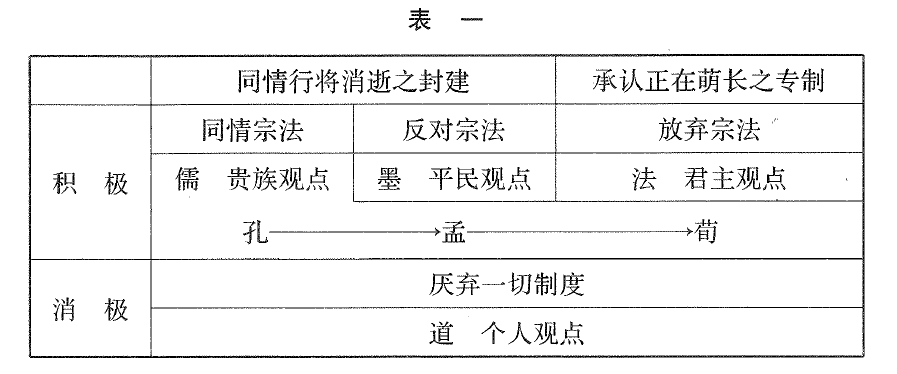
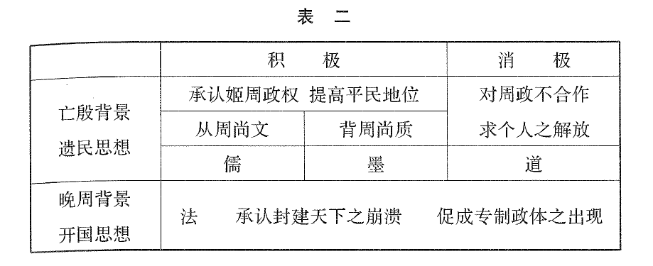
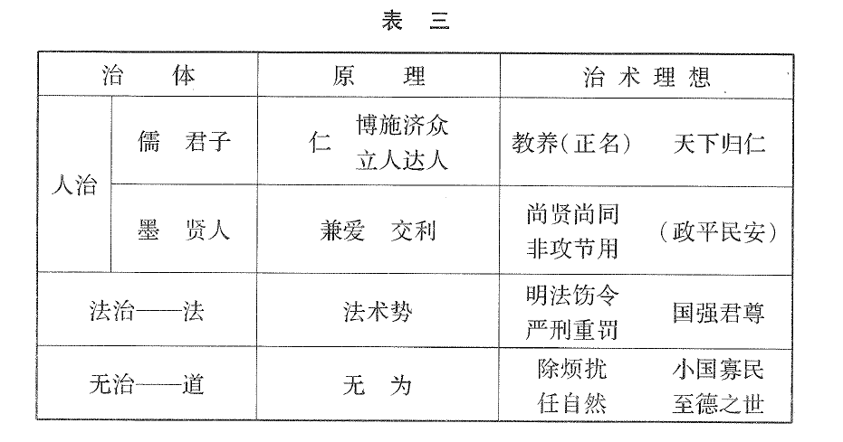
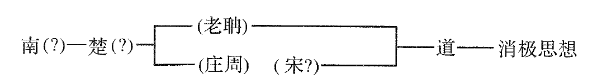
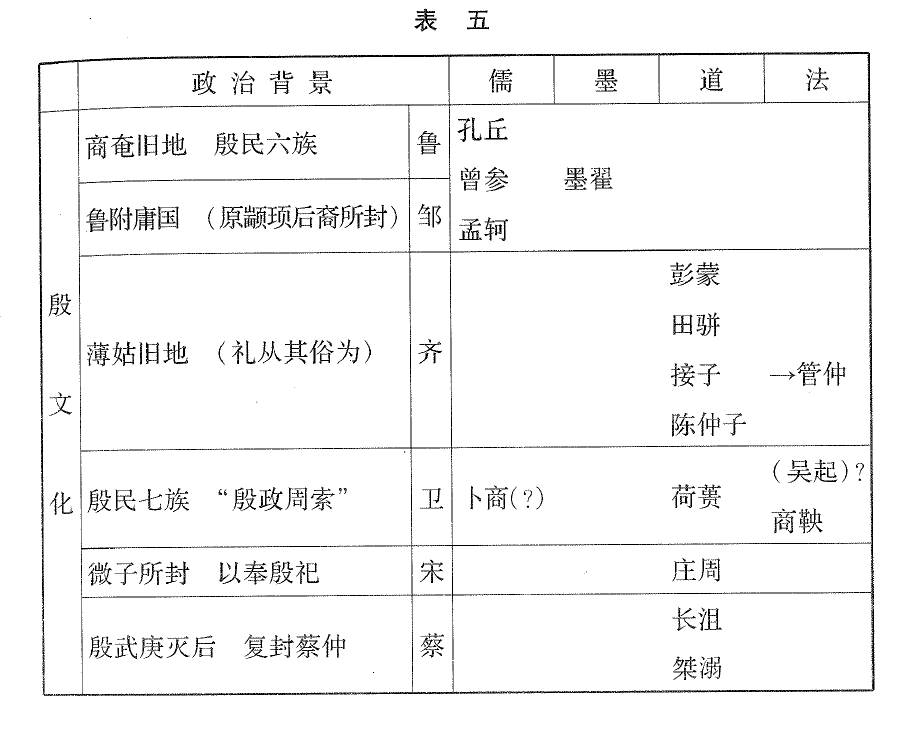
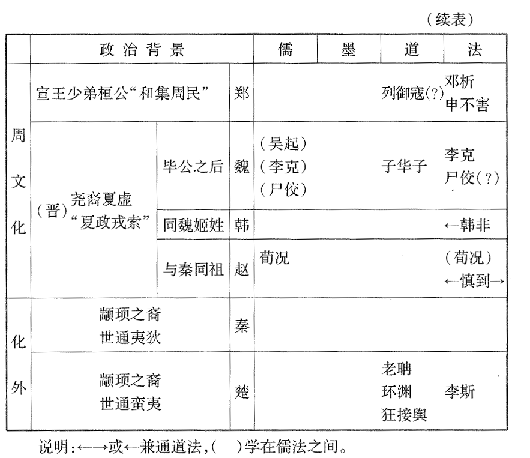
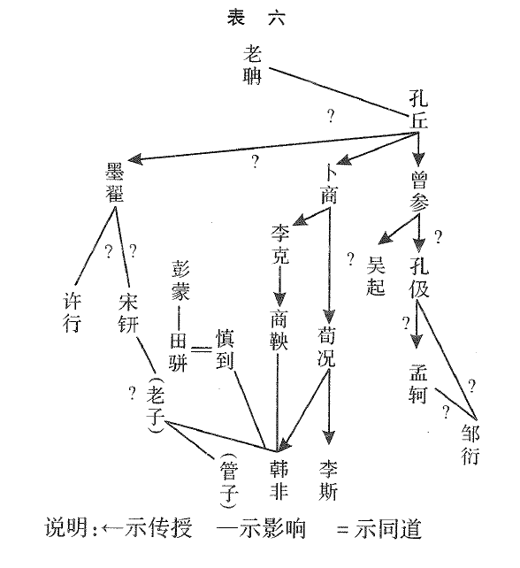
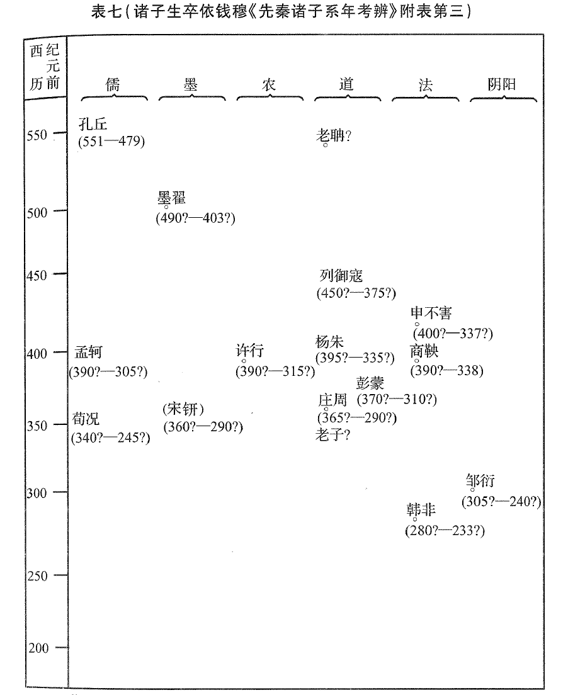

萧公权：《中国政治思想史》，“凡例”；“绪论”；“第一编：封建天下之政治思想——创造时期”，北京：商务印书馆，2018。
凡例
- 本书采政治学之观点，用历史之方法，略叙晚周以来二千五百年间政治思想之大概，以供各大学政治系学生参考之用；其西周以前之一段，因文献寡征，暂援孔子阙疑之例，不立专编叙述，只于孔孟诸章中随时附件。
- 本书体例以时代为经，以思想派别为纬，其取材以前人著作之具有理论价值者为主。影响较大之政论亦酌量述及，专对一时一地实际问题之政论则一概从略。
- 本书叙述各家思想，力守客观之态度。偶有论评，亦意在辨明其历史上之地位，非敢任意抑扬，臆断得失。
- 本书第五编，原稿沦陷，仍存其目，以明原委。
- 撰者学殖荒落，而本书属稿值抗战期中，参考图书又颇不便。匪特见闻未广，尤恐纰缪滋多。事先不及就教高明，尚希不吝随时赐正。
绪论
一、中国政治思想史之起点
研究政治思想史自晚周为始。
夏商之世，学术思思方见萌芽，未能具体，况文献不足。故吾人今日欲取中国政治思想作较有统系之研究，至早只能以周代为起点。
周代学术之大兴，不在西周盛世，而在东迁以后之春秋末叶与战国时代。政治思想兴于晚周之主因有二：社会组织之迅速变迁；伟大思想家之适生其会。
二、中国政治思想史之分期——按思想演变之大势
- 创造时期：自孔子降生（前551）至始皇统一（前221）为时约三百年，包括春秋晚期及战国时代，学者通称之为先秦时代。
- 因袭时期：自秦汉至宋元（前221-1367）为时约一千六百年。
- 转变时期：自明初至清末（1368-1898）为时约五百年。
- 成熟时期：自三民主义之成立以迄于今。
先秦为创造时期，但创造非无中生有之谓：先秦大家发挥旧说，然后斐然成章，蕴蓄深远，进为一家之学说。
吾人认先秦时期为创造，尚有一最重要之理由：无论诸子学说之来源如何，其本身实“自我作古”，开后学之宗派。直至明清海通以后，外学输入，思想方为之丕变。
秦汉以迄宋元之为因袭，亦非悉出模仿。秦汉以后之思想家虽因袭前人之观念与名词，而政治之对象既已迥异，则其所持观念之内容，与所用名词之含义，亦势不能与古人悉合。思想之内容虽随时代而屡变，其大体则先秦之旧；绝对新创之成分，极为罕见。
因袭时期政治思想潮流冲击之大势，乃中国学术上之长期内战。其交战之团体为中土固有之学派，其争斗之利器为先秦旧创之学说。学术内战之结果，虽非政治思想之全部停滞，然中国君主专制之政体，自秦汉开端，此后殊少改变。
吾国政治思想转变之直接原因为外力之刺激。佛教东来、五胡乱华，未曾引起政治思想之转变。必俟明清海通，欧洲之高度文化随传教士而播于中土；加以闭关自守之局既破，更屡为外国所侵侮，空前巨变激起思想上之革命。
转变时期虽包括明清两朝之五百年，然明代以至清初不过略见转变之端。除旧更新之大转变，直至晚清，然后发动。
辛亥革命，思想为转变时期之结局，亦为成熟时期之起点。二千余年之政治思想，至孙中山先生之三民五权学说，乃臻成熟之境。
三、中国政治思想史之分期——按思想之历史背景
- 封建天下之思想：包括春秋及战国时代，与上述之“创造时期”相当。
- 专制天下之思想：包括秦汉至明清之二千年，与“因袭时期”及“转变时期”之前大部分相当。
- 近代国家之思想：包括清末戊戌维新时代及辛亥革命以迄今日，与“转变时期”之后部及“成熟时期”相当。
政治思想与政治制度相推移。吾国政制自商周以来，凡经三变：
- 商周之际，部落社会渐进而成封建天下。
- 始皇并吞六国，划天下为郡县，定君主专制之制。
- 晚清失政，民国开基，二千年之君制遂告终止。
专制天下时期政治思想之主要趋势有三：
- 儒家思想由拥护封建制度一变而拥护专制政体，成为二千年中之正统学派。
- 儒家势盛，而法墨同归失败。
- 儒道二家随社会之治乱，互为消长。
封建与专制两时期之思想有一共同之特点：无论其内容如何，均以“天下”为对象。其所异者封建天下为合法之分割，专制天下为绝对之一统而已。
天下本位之思想，使国人根本缺乏国际观念，一切政治关系皆为内政，而无外交，民族思想发育不良，缺乏近代国家之观念。然此实历史环境之所限，不足以为前贤病。
明季清初，西洋教士所传之西学，未发生普遍之影响；必经辛丑、庚申、甲午、庚子诸役丧师辱国，始觉专制天下之旧制度旧思想不足以图存。欧美近代国家观念与传统思想互相争斗，局部调和，先之以戊戌维新，继之以辛亥革命，至孙中山先生集全局之大成，而吾国政治思想之第三期于是正式开始。
第一章：先秦政治思想之流派
第一节：历史背景
就政治思想言，仅儒、墨、道、法四家足为大宗。
周之封建天下，政治基础实不稳定：鼎盛之时固不失为太平之世；然时迁世易，乃趋于骚动。阶级制度与元后政治迅速倾圮，宗法井田相随消灭。
战国时期政治之最大特点为君权扩张。上无元后之拘束，下无贵族之牵制。毁灭宗周，解散封建之政治离心力，至此竟转化为促成集权专制之向心力。始皇之统一，不过因势利导而已。
在此由封建天下转为专制天下之过渡时期，政治思想之可能态度，不外三种：
- 对将逝之旧制度表示留恋，而图有以维持或恢复之。
- 承认现状，或有意无意中迎合未来之新趋势而为之张目。
- 对于一切新旧之制度均感厌恶，而偏重个人之自足与自适。
四家态度之大概：

儒、墨、道三家似均有殷遗民之背景，如因此称三者为旧学，则法学似可因其无殷文化背景而称为新学：

若就四家思想之内容论，一曰人治派，儒墨属之；二曰法治派，法家为其代表。人治与法治二派皆为积极之政治思想，其取消极态度而并与二派对立者则为道家所代表之无治派：

第二节：地理分布
梁启超分诸子为南北二派，以孔子为“北派正宗”，老子为“南派正宗”：


可见儒、墨、道三家发源之区域似均较法家为狭小。
诸家分地发生之原因，今已无从考见。就大体推测，则周礼在鲁自应为儒之故乡。墨受儒之影响，且为宗法制度之反动，故亦于此出现。法家之发源地似以晋为中心，而卫郑为附庸。法家思想于齐发端，事亦可能，惟《管子》一书若乃战国时人所伪托，则难据以断定法家思想先见于齐矣。
四家异地产生之原因，以道家为最难探索。只能推论得一较近情之假定：老庄生于楚宋，或为殷民之后。
如按政治背景，将诸子生长之各国分为“殷文化”、“周文化”及“化外”之三类，则先秦学派之地理分布可表示如下：


考四家传播之情形：就游仕所及之地而论，亦足证儒家为鲁国中心之北方学派。墨家传播之区域更广，独南行，而北方所至亦远。法家传布之区域，就猪子游仕所至观之，则秦为中心而韩魏次之。道家诸子之事迹难考。
综上：儒家思想以鲁国之历史背景为依据，于四派之中最富地域之色彩。法家对七雄之当前需要而立说，最富于时间之意义。道家为我，超越时空。墨家承认封建之政治而攻击宗法之阶级，徘徊于新旧潮流之间而两无所可，宜其不得致用于当世，不久而师传竞绝。
上述四家为先秦政治思想之主潮。
此外尚有许行之农家与邹衍之阴阳家。前者立君臣并耕之义，以平等破阶级；后者倡阴阳五德之说，以世运定盛衰，影响于秦汉思想者尤大。农家或由墨学蜕变，阴阳似为孔孟支流。邹衍生于齐，许行出自楚，故阴阳为北学而农属于南；许行是以南学而行于北，邹衍则北学而显于北。
第三节：交互影响
先秦诸子各立门户，互相攻诋，但并非壁垒森严：
- 墨子曾受儒家之影响。
- 法家思想一部分殆由儒学蜕变而来。
- 法家亦受道家影响。
- 道家与墨家殆亦相通。
- 农家曾受墨家之薰染，阴阳似为儒之旁枝。
- 诸子关系之最难定者，无过孔老。
综括诸子学说传授及影响大概：

第四节：时代先后
考证先秦学派之先后，其途有二：一为发源之先后，一为成立之先后。前者较为困难，后者略易着手。
兹将先秦各家政治思想成立之时期，表示如次：

（著者附注）本章所述，多未定论，仅供读者参考之资。
第二章：孔子
第一节：孔子之身世及时代
孔子（前551-前479），名丘，字仲尼。孔子为殷遗民贵族之后。其所受教育如何，已无法详考。孔子虽自谓“多能鄙事”，而其所学者殆皆当时士大夫持身用世之术，外此者所不屑为。盖春秋时代农工为平民之业，士大夫不事生产，孔子少虽贫贱，其所治则“君子之学”。
孔子一生之事迹，不外从政、教学与编书三端。
其政治生活较为短促。
孔子从事教学，发端似颇早，“三十而立”，开始授徒或在此时。其弟子之贤者为七十人，其中出身贫贱者似占大多数。然七十子之门第虽卑，而所学则多为仕进之术。
孔子好古敏求，得观公家藏书，乃复加以整理，发明意义，而以之传授于后学。孔门教材之来源，并不限于官书。孔子不仅广采众说，且亦自有创见。
综孔子一生之事迹观之，其最大之成就不在拨乱反正，而在设教授徒。孔子根据旧闻，树立一士君子仕进致用之学术，复以此学术授之平民，而培养一以知识德能为主之新统治阶级。
时代影响：孔子正当春秋之末叶，由封建天下转入专制天下过渡时代之初期。周礼已废而未泯，阶级方坏而犹著。孔子身受旧社会之熏陶，又于旧制度中发现新意义，即欲以其所发现名为改善及复兴旧秩序之具。然当时之公族世卿既未必能用其言，遂传其术于平民，使其学成者出仕公卿，取得致用之机会。
孔门之教，意在以德取位。孔子之目的有二：
- 化德位两缺之小人为有德无位之君子。
- 致有德无位之君子为德位兼备之君子。
孔子之政治理想虽对封建天下之季世而发，实未尝得全部实行之机会。若以现代术语明之，则孔子乃伟大之政治思想家而失败之政治改进者。专制时代之君臣，虽推尊孔子，表章儒术，其实断章取义，别具私心，存其仁义之言辞，略其封建之背景，忘其平阶级之宗旨，遗其君子儒之教义。
第二节：从周与正名
孔子奉周政为矩范，其思想中亦有“殷礼”之成分。然孔子政治思想之中凡涉及制度之处，殆甚少殷礼之成分：
- 殷之文化，或甚浅演，其质度必的质朴，与儒家之理想不合。
- 即使殷商之文化颇高，周因殷礼，则孔子从周，只间接采用殷礼，并非兼采二种不同之制度而调和之。
- 孔子于殷之礼俗，取舍从违不一，然其所从者似皆个人与社会生活之末节，与政治无直接之重要关系。
若进而推论孔子思想之环境，则制度从周，更有其必然之理由。孔子已承认周人之政权，况周因殷礼，郁郁乎文，而杞宋之文献不足，殷礼无征，当时亦无殷之“顽民”能从孔子抗周。故孔子之政治态度为周之顺民，而其政制之主张为守旧。
孔子政治思想之出发点为从周，其实行之具体主张则为“正名”。以今语释之，正名者按盛周封建天下之制度，而调整君臣上下之权利与义务之谓。盖孔子生当周衰之后，封建政治与宗法社会均已崩坏，目睹天下秩序紊乱，推究其因，不得不归咎于周礼之废弃。
正名必借具体制度以为标准。孔子所据之标准，即盛周之制度：
- 就狭义之政制言，则为文武之“方策”；依文武之政以正名，故曰“宪章文武”。
- 就广义之制度言，则为“周礼”；依周公之典章以正名，故曰“吾学周礼”。
第三节：仁
孔子从周而不以“方策”自限。孔子于周制之中发明深远之意义及目的，有超越时代环境而理想化之趋势。此发明之中心，厥为“仁”之观念。
若就其与政治思想有关系之方面言之，则孔子所谓仁，乃推自爱之心以爱人之谓。仁之成就，始于主观之情感，终于客观之行动，全部之社会及政冶生活，实为表现仁行之场地。
若持孔子之仁学以与欧洲学说相较，则其旨既异于集合主义之重团体而轻小我，亦非如个人主义之伸小我面抑国家。二者皆认小我与大我对立，孔子则泯除畛域，贯通人己。
孔子仁学之可能来脉，不外：
- 姬周之今学。
- 殷商以前之古学。
- 孔子之创说。
据现存之文献测之，首例一端之成分较少，后二者之成分较多。
孔子深晓殷政宽厚之传说。周政尚文，制度虽备，而究不能久远维持，至春秋而有瓦解之势，孔子思补救之，故于殷政宽简之中，发明一仁爱之原则，乃以合之周礼，而成一体用兼具之系统。
孔子如于殷政得仁道之端，则何以不直述之以为“殷先哲王”之言乎。其可能之原因有二：
- 孔子明言，生今反古，烖及其身。
- 仲尼祖述尧舜，宪章文武。尧舜之政理，其宽简朴质更甚于殷。
孔子从周，可谓守旧；而其言仁，可谓复古。谓之“改制托古”亦无不可。
第四节：德礼政刑
孔子所举之治术有三：曰养、曰教、曰治。
养教之工具为“德”、“礼”，治之工具为“政”、“刑”。德礼为主，政刑为助，而教化又为孔子所最重之中心政策。
孔子以养民为要务，盖亦仁爱思想之一种表现。但国家之目的不仅在人民有充裕之衣食，更在其有美善之品性与行为。教化不只为治术之端，实孔子所立政策之主干。
教化之方法有二：一曰以身作则，二曰以道诲人。孔子尤重视前者。
孔子之教化政策，以培养个人之品格为目的，而不注重智识与技能。此为孔子仁本政治之必然趋势。
孔子思想中之“政”，不仅与近代学者所论者不同，且与古希腊柏拉图之说亦有区别。近代论政治之功用者不外治人与治事之二端。孔子则持“政者正也”之主张，认定政治之主要工作乃在化人。非以治人，更非治事。故政治与教育同功，君长与师傅共职。
简言之，孔子所谓政刑，即一切典章法令之所包，文武方策之所举，周礼之所载，以制度为体而以治人治事为用之官能也。盖天下之民不能率教而同化者殆不在少数，足见国家不可废法令刑赏之事。
然孔子之治术倾向于扩大教化之效用，缩小政刑之范围。其对道德之态度至为积极，而对政治之态度殆略近于消极。
周政尚文，制度完密，然易趋于徒重形式。孔子轻视政刑，殆为其对周政之一种改进。
孔子治术之纲领：遵奉时君之制度，缩减其应用之范围，增加其道德之意义，而寓改进于守旧之中。
第五节：君子
吾人如谓“仁治”为孔子改进周政之第一大端，则“人治”为其第二要义，而其所屡言之“君子”即人治思想之结晶也。
《诗》、《书》“君子”殆悉指社会之地位而不指个人之品性；即或间指品性，亦兼地位言之；离地位而专指品性者绝未之见。孔子言君子，就《论语》所记观之，则有纯指地位者，有纯指品性者，有兼指地位与品性者。据吾人之推想，孔子所言君子之第一义完全因袭《诗》、《书》，其第二义殆出自创，其第三义则袭旧文而略变其旨。
孔子屡言君子，其用意似有二端。一以救宗法世卿之衰，二以补周政尚文之弊，而两者间实有连带之关系。
孔子论君臣关系之精义尽于“以道事君，不可则止”之一语。孔子不拘执于必仕必隐，而一以能“行道”与否为出处之标准，故个人对君国之本身并无绝对之义务。后人以专制天下之眼光论封建天下之孔子，乃张冠李戴，厚诬古人。
孔子虽谓为政在人，非即谓为政不必有制。“从周”与尚仁之两层主张，相互为用，不可偏废。孔子之注重“君子”，非以人治代替法治，乃寓人治于法治之中。
第六节：大同小康与三世
孔子政治思想之要点，略如以上五节之所述。然尚有公羊家所主“大同”与“三世”之二义。
大同小康之言见《礼记·礼运》。“礼运”可疑，不当取作孔学之代表；然大同之议，高尚优美，虽越出孔子雅言之范围，尚不与儒学之宗旨相反背。
至于春秋“三世”，则兴于汉代，董仲舒为其代表。何休三世之说，经近世公羊家之推演，更为复杂。
然何休言三世，自相矛盾，不足信；则康有为辈更勿庸置议。舍旧籍之明文，立微言以骋臆说，则牵强附会，不足以为谨严之学术。
以《春秋》为孔子“正名”思想之所寄托，最能得其实情。
公羊家之言既不足据，则吾人当承认孔子之政治思想具有显明之时间性。其思想既以封建天下宗法社会之历史环境为根据，则其内容虽不为此环境所囿，而亦不能与之相离。
何休尚有《春秋》于升平世“内诸夏而外夷狄”，于太平世“夷狄进至于爵，天下远近大小若一”之说。此则较有依据，非出虚构。
孔子之论夷夏，已废弃种类之标准而就文化以为区别。孔子以文化判夷夏，其意在用夏变夷。夷夏因文化之升降而无定界，严格言之，孔子思想中未尝有近代之民族观念。如求其故，则九州之民同为黄肤黑发，已交杂难分；而文化程度远近相殊，尚显然可辨。
第三章：孟子与荀子
第一节：孟荀之身世及时代
孔子后学政治思想之足以成家而文献可征者，仅有孟荀二人。
孔子生春秋之末叶，孟荀当战国之后期。封建天下之制度风尚，前之残存未尽者，至此乃泯灭无余。
孟荀之生卒确年，今无定论。
孟柯，邹人，受业子思（孔子之孙）之门人。一生游历宋、薛、滕、鲁、梁、齐诸国，声誉日隆，生活日裕，然其政治上之成就则甚少。
荀况字卿，赵人。少年游学稷下，于齐无所用，之楚为兰陵令，此外似曾游燕不遇。襄王时再度居齐，旋复去齐，适秦返赵，在赵位居上卿。暮年似又复居楚。死后不过二三十年而始皇统一。
第二节：民为贵
孔子论政，以仁为主。孟子承其教而发为“仁心”、“仁政”之论，其说遂愈臻详备。
仁心之起，原于性善。孟子以为仁、义、礼、智之四德，皆由人类天赋侧隐、羞恶、恭敬（或辞让）、是非之心，引申发展而成。
仁心发展，见于行事，则为“推恩”。仁政者以不忍之心，行推恩之政。
仁政必有具体之设施。孟子所言，似可以教养二大端概之。其养民之论，尤深切详明，为先秦所仅见。孟子于养民之要不厌反复申详，而教民一端则多附带及之。
养民既为政治之第一义，孟子乃更进一步而发为民贵之论。当孟子之世，国强君威，专制萌芽，一时风气趋于贵君而贱民。孟子乃力排众议，正告天下曰：“民为贵，社稷次之，君为轻。”
孟子不仅以人民为政治之目的，亦且以之为主体，大明民主君仆，民体国用之旨，明揭暴君可杀之义。
孟子贵民，故极重视民意，而认民心之向背为政权转移及政策取舍之最后标准。若以今语释之，则人民为最后主权之所寄。故：
- 不独于君主废立之际，即在平时，国之要政亦应取鉴于舆情。
- 政府有绝对养民安国之义务，而人民无绝对服从政府之义务。
虽然，孟子民贵之说，与近代之民权未可混同。民权思想必含民享、民有、民治三观念。孟子贵民，不过由民享以达于民有，民治之原则与制度皆为其所未闻，民意仅能作被动之表现，治权操于“劳心”之阶级。
孟子本民贵之宗旨，又进论臣工之职位，而断定其为国之公仆，承君命以养民，非君主之私属。
孔子之理想乃以君为师，孟子则以师教君。孔子欲君子之以德致位，孟子则以德抗位。
关于个人出处，七篇所记孟子之言，表示三种不同之态度：
- 孟子称孔子为“圣之时者”：可仕则仕，可止则止。
- 孟子有时放弃此种主张而肯定个人从政之义务。
- 然孟子所屡言，而似即为其意所倾重者，为修身独善；行道立功，反成末务。然孟子之意在于修身见世，与高蹈远引之隐者又不相谋。
第三节：定于一
周衰欲灭，诸侯愈强。孟子深察世变，急思拯民。孔子之政治思想倾向于承认既定之政权；然孟子所想望者非周室之复兴，乃新王之崛起。所谓“定于一”者即此想望之表示也。
孔孟之异又可于其对王政霸政之态度见之。孔子尚于桓公管子之功颇加称许，而孟子始尊王黜霸。盖霸政之作用在封建制度已衰未溃之际，挟天子以令诸侯，于紊乱中维秩序；及至七雄争长，则挟天子既无所用，令诸侯亦势不能。
孟子黜霸，其意在尊王而促成统一。然所尊者非将覆之周王而为未出之新王，所欲促成者非始皇专制天下之统一而为先秦封建天下之统一。
简言之，孟子意在立新政权以复旧制度。其留恋封建政治之情绪，拥护封建政治之主张，皆略同孔子。孟子深信古先圣王所立之制度尽美尽善，可为万世之楷模。
孔孟均拥护封建制度，何以：
- 孔子专主从周而孟子泛言先王？
- 孔子设以德致位之教而孟子立“仕者世禄”之言？
孔子去古稍近，方策犹存，且姬周政权尚无溃灭之征兆；孟子去古较远，生当周室将倾，故径舍周礼而泛言先王。且其所称先王之法，殆不过就古制之轮廓加以自创之理想融铸混合而成，不必全有历史之根据。
至于孟子主张世禄之原因，亦当于战国之环境中求之：自宗法衰弛之后，仕宦无一定之君，划策皆诡遇之议，苏秦、张仪最足以代表当时之“投机分子”。孔子患世卿之鲜有德，故立以德致位之教；而孟子之时，布衣卿相亦多有位无德、朝秦暮楚，反不如世及以为礼，孟子遂复欲以世臣世禄矫之也。
第四节：一治一乱
孟子既认先王之法为百世不变之规矩，又发明“一治一乱”之史观，于是孔子政治进步之暗示归于隐灭，而政治循环之理论遂成为一千年中有力之学说。
孔子虽不言天道，而似深信天命。然孔子言命似限于个人之穷达，孟子乃以之论政权之变动。
孟子又有五百年为治乱一循环之说，则为《书》、《传》之所未载，或为其所自得。此说虽未尽合历史事实，尚不失为一有趣之历史哲学。
第五节：礼
孔子论政，立行仁与正名二要旨，前者得孟子而大申，后者经荀子而更备。
荀子集先秦礼论之大成。孔荀说礼，均从周道，而非自辟宗风。
春秋时人之论礼，含有广狭之二义。狭义指礼之仪文形式，广义指一切典章制度。儒家之所重视而阐明者乃广义之礼，荀子之政治思想即以此广义之礼为基础，合以性恶之说，而蔚为一家之言。
荀子主性恶，在先秦儒家中殆为非常之创见。荀子所谓礼，乃人类性恶之苦口良药，而亦社会生活之基本条件。
盖主性善者必主率性，故孟子重仁；主性恶者必主制性，故荀子重礼。
荀子论礼，所以节欲，而非教人以绝欲。礼之真正目的乃在借节欲之手段以图全体人民物质生活最大限度之满足。
人性既恶，则合群生活之中势必发生二重困难之问题：
- 个人之权利不定则争享受。
- 个人之义务不定则怠工作。
解决之道惟在制礼以明分，使权利与义务皆确定而周知。
礼之最后目的为养。其所持足国之道包含“节用以礼，裕民以政”之二大端。
裕民以政不外乎“轻田野之税，平关市之征，省商贾之数，罕兴力役，无夺农时”之数事，此皆与孟子不甚相远；其发孟子所未道者，当以其流通财物之说为最著。
礼之目的为养，其手段则为“别”。所谓别者，即“贵贱有等，长幼有差，贫富轻重皆有称者也”。别之具体表现为国家一切分等异级之制度。
荀学为专制天下前夕之思想，又可于其尊君之态度见之。荀子所以尊君，其原因在环境者一，在学说者三：
- 就环境论，孟荀皆生国大君威之时代；孟子申古义以抗潮流，荀子就时势以立学说。
- 就思想之内容论，荀子论礼，以明贵贱、别上下、异君臣为要义：不尊君则无以致别异之用。
- 政治组织既由圣智之君主以产生，政治生活亦赖继体之君主而维持：治乱系于一人，则尊荣殊于万众。
- 君主之职务为明定全国臣民之权利义务而监督之，倘使君主无至尊之位，至大之权，则此重要之职务必难于执行。
荀子尊君，固有与法家根本不同之点。法家倾向于以君为政治之主体，荀子则不废民贵之义。以今语释之，荀子思想中之君主，乃一高贵威严之公仆，而非广土众民之所有人。若一旦不能尽其天职，则尊严丧失，可废可诛。
第六节：治法与治人
法有广狭二义，与礼相似。狭义为听讼断狱之律文，广义为治政整民之制度。就其狭义言之，礼法之区别显然。若就其广义言之，则二者易于相混。
封建宗法社会之中，关系从人，故制度尚礼；宗法既衰，从人之关系渐变为从地，执政者势不得不别立“贵贵”之制度以代“亲亲”。然礼之旧名，习用已久。荀子之礼治思想殆即表现此过渡时期之趋势，故言礼而不为纯儒，近法而终不入申商之堂室也。
荀学之主干非封建天下之旧礼，而为新旧交糅之“治法”：
- 用人之法：君主应专权而不可独治。主张打破门阀、专论材能之文官制度。官人主要之原则在立公制以屏私意。
- 劝禁之法：慎刑。
- 正名之法：以正名与性恶、礼治之说相连，略失孔学温厚之旨。荀之正名与李斯愚民，一转手间耳。
荀子极言治法，虽内容不纯，而悉归之于三代圣王，以为矩范。荀子之论制度，本不与孔孟相悬殊；然其操术大不相同：
- 辨孔荀治法之异同，当注意其内容，而不可徒观其称号。
- 其治法之内容既多杂以战国之成分，则其自称“复古”，殆不免“用名以乱实”，不足以证其真学孔子。
荀学诚有与孔孟精神一贯之处，特不在其论治法而在其重治人。简言之，荀子之政治思想以法为末，以人为本。故接近申商者其皮毛，而符合孔孟者其神髓也。
荀子论治人之言以“君道”为最著，盖上承人存政举、人亡政息之旨而加以发挥。
法家寓君权于械数之内，荀子则欲君主之人格透露于法制之外。前者专重治法，后者则求治人以行治法。
孔孟重君主之道德而不重其权势，申商重君主之权势而不求其道德。荀子乃兼重之，看似尽善，实则两害。
第七节：天人之分
天命鬼神之说，入人至深。荀子力辨天命灾异与政治人事无关，其说颇为明快。又进而释灾异不足畏之故，其说亦尽情合理，可以解蔽祛惑。然荀子仅欲破除迷信，而不求变易习俗，其言未必真得多数之听从。
春秋以前，君权有所限制。贵族世卿、大臣巨室，为直接限制；民心、天命、鬼神、卜筮，皆间接限制。
今荀子非天命破灾异，既取古人限君重要学说之一而攻之，又未如申韩之明法尊制，则其学说必有流弊。
然天命灾异之说未必有实际政治效果，故平情而断，荀子“天论”，尚非得不偿失之作。
第四章：墨子
第一节：墨子之身世及时代
墨子姓墨，名翟，鲁人，生卒年均难确考。墨子先世或为殷之遗民，门阀无考而身为“贱人”。墨子执业，殆非农非贾，而为擅长制械之工匠。
墨学之内容，深受儒术之影响。端也。墨子虽或受教于史角之后及孔子之徒，然其学则融铸古义，适应时需，自立创新之教，以成一家之言，非前人之所能范围。
墨子少年时，多居鲁国，常与鲁之儒者相辩难，又尝与鲁君相问对。惟其言既不行于宗邦，乃去之他国以求试用。
孔墨不同道，世所习知；然考其行迹，二者实有相似之处：述古学以自辟宗风，立治道以拯时弊。游行诸国，终无所试。乃广授门徒，冀其能行道而传学。其相异者一仕一不仕，一由少贱而自跻于士大夫，一则终身以贱人自处。
墨徒甚众，可惜记载缺失，学行不彰。弟子后学姓名今犹可考者不过四十人。
第二节：兼爱交利
墨子生当战国初期，列国篡杀攻伐之事日益多而害益烈。墨子认定世乱由于人之自私，而救乱之方在去人之自私而使之相爱。虽然，墨子之时，天下既已不相爱而大乱，则兼爱之说推行匪易。
墨子之“爱”，乃袭孔子之“仁”而略加变易以成：
- 仁爱二名之训诂相通。
- 泛爱与兼爱之大旨相通。
- 墨家非儒，所举多端，而未尝本兼爱之旨以攻孔门。
- 儒家攻墨莫剧于孟子，至诋其兼爱为无父，为禽兽；惟孟子所以不斥墨子他说，而独注目于兼爱者，推想其意，殆深知此乃两家最相接近之处，恶紫夺朱，故不得不力距之欤。
虽然，儒墨言爱，按其施行之等差及其发生之原本，似有不同：
- 施爱之差等：儒家行仁，虽以仁民爱物，兼善天下为极点，然始终坚持按亲疏近远以为推恩先后之原则；墨子虽不否认家族伦理，但较注重爱利之普及，图直达于大同。
- 仁爱之原本：孔子言仁，以个人之仁心为起点；孟子言仁，以恻隐之心为发端：盖皆注意主观之情感，未尝以客观之效果，为仁爱之根基。墨子乃不复重视个人之品性，而倾向于依效果之利害，定爱恶之取舍。
第三节：尚同
墨子之政治思想既以利害为起点，亦立为尚同、天志、明鬼诸义，以保障兼爱之施行。
尚同者，盖墨子中之政治制裁，而天志、明鬼则其宗教制裁也。
兼爱之必有待于尚同，其主因在人之性恶。趋利避害乃人性本然，故必设立天下共同之政权，以为万姓行动之标准，使个人化除自私，而归心于全体之公利。
政治制度之建立，始于选择天子，其事乃由上以及于下。然尚同工作之进行则始于一里一家，其事乃由下以达于上。
墨子虽重视政治制裁，然并不似法家诸子之倾向于君主专制。简言之，墨家尚同实一变相之民享政治论。盖君长之所以能治民，由其能坚持公利之目标，以为尚同之准绳。若君长不克尽此基本之责任，则失其所以为君长而无以治。
墨子思想中之政体不独非绝对专制，且亦非一统专制。其尚同之说，必画天下而分封，取国君之总义，实与孔子之“礼乐征伐自天子出”均为封建天下政治背景之反映，非含有根本不同之创见也。
墨子尝论刑政之初兴，由于选立贤者以为天子。近人有谓墨子主张民选制度者，实与墨子之思想不合。就墨子思想之大体推论，则天子之创立殆出于天志，而非由民择。
尚同之作用，在建立具体之制度，以保证兼爱之推行。然孔子正名，标从周之义，墨子尚同则不专主任何一代之制度。其故安在？墨子殷遗贱人之历史背景，或为一可能之原因。身为贱人，既不变殷，更不从周，于当时诸国之政教亦未有所偏重，故其思想比较缺乏历史性与地方性，而略带大同主义之色彩。
第四节：天志明鬼
墨子以为：人之对天，不可不取绝对服从之态度。天志之说，似立于三种根据之上：
- 墨子以为“天下从事者不可以无法仪”。
- 天为全体人类之惟一主宰，其赏罚严明普及而不可逃，非若得罪家长国君犹有邻家邻国足为奔避之所。
- 天有管治人类之无上威权，其赏罚虽天子亦不能免。
故墨子所想像之全部政治机构，颇似一宝塔式之层垒系统。天志为其颠顶，由此自上而下，历天子、三公、国君、将军、大夫、列士诸阶级以于庶民之底基。
墨子尊天之外又兼明鬼，以为鬼神之赏罚善恶，统治君民，一如天志。考墨子所以推尊天鬼，其用意显在借神权以加强其学说之力量。
墨家之宗教思想，虽立说粗疏，不足深论，而其“非命”之旨，则颇具起懦振迷之效用。墨子证有命之不利于社会，又据“三表”以定命之必无。然墨子非命，以之斥古之暴王则可，以之攻儒家则未得其平。盖孔孟虽持有命，然二子绝未教人以“听天安命”；荀子主“天人之分”，其立说之精神实不殊于《墨子》。故就孔、孟、荀三家论，似墨子以非命攻儒，几如无的放矢。
第五节：尚贤
盖墨子之意，以为治国养民乃一至艰至巨之事业。若非贤能之士，必不能胜此重任。故居上位者必有出众之才，而尚贤乃“为政之本”。
墨子“尚贤”易生误会之数事：
- 墨子尚贤不仅反对官禄世及，实亦攻击权臣佞幸之窃位。
- 墨子尚贤，就大体论，乃于封建末世之旧制度中寓机会平等之新原则，非荡平阶级，泯尊卑贵贱之等差也。
- 墨子尚贤虽背周而不背儒。孔墨并有“布衣卿相”之理想，荀子之学，则尤与“尚贤”相接近。
虽然，儒墨之间有大不相同之处：儒家尚贤，不徒取事功而兼重道德，必须修身立德，以为下民之师表；墨家所谓贤人，以儒家之眼光比之，不过具一能一技之长，有敬事勤王之劳，而未足以语于化民成俗之极致。此墨学为儒术平民化之又一证。
第六节：节用
考墨子崇俭，约含三义：节用、节葬、非乐。节用为主旨，节葬、非乐则其分论也。
节用之直接目的在于充裕民生，其最后之目的则为实行爱利。墨子所主张者，非只以俭省费用为原则，而实重在免除无益之消耗。
本此不加民利不为之原则，墨子又立为节葬、非乐之论，以与儒家相抗。
墨子反对厚葬久丧，其惟一之理由为行其术者，不可以富贫众寡，定为理乱；丧葬本为不得已而无所利之事，多一分费用，即多一分损失。
非乐之旨，不外六点：
- 作乐必有乐器，乐器亏夺民衣食之财。
- 饥者不得食，寒者不得衣，劳者不得息。
- 作乐不足以禁暴止乱，无补于事。
- 作乐必有乐工，为乐工者必废生产事业。
- 听乐者必怠于工作。
- 古之圣王不为乐。
墨子尚俭之说，虽针对社会全体而发，然就其内容以论，似尤注重王公大人之接受奉行。
虽然，吾人如舍战国之特殊背景，而一论节用主张本身之得失，则墨子似不免有矫枉过正，为道一偏之错误：
- 违反人性。
- 不合治道。
第七节：非攻
墨子节用之失，在徒有足民之心而未究生财之道。至其非攻，则于鲜明之理论外，复具防御战争之优美技术。故就实际上之价值言墨学之精，无逾此者。
儒家固亦反对武力之侵略行为，非攻洵非墨子所独创。然儒家能非攻而不能救攻，其言遂鲜实效。
墨子非攻之理论，亦有与儒家异趣者：墨子之说非攻，随时随地皆以“不利”为言。盖自墨子视之，攻伐之起，多由侵略者认战争为有利之事，故必先破除此错误之估计，然后非攻之说可行。墨子所陈攻之不利约有三端：
- 侵略之战“计其所自胜，无所可用也。计其所得，反不如所丧者之多”。
- 侵略者误认攻伐可以兼并土地，富强国家。殊不知有攻伐即有灭亡。
- 攻伐祸害所及又不仅限于君国，竭天下百姓之财用不可胜数也。
墨子又认定好名亦为侵略之主要动机，故连带及之，以不攻伐之决不可为。
侵咯之战争既不可为，则各国所讲求者自卫自存之术而已。盖墨意深知攻伐不能猝止，乃主张以自卫对抗侵略，以息强大者之野心，其意略如近世所谓武装和平。
第五章：老子与庄子
第一节：老庄之身世及时代
先秦思想大家事迹之最难考见者殆无过老子与庄子，而老子尤甚。
老子姓李，名耳，字聃。以娴习旧礼为周守藏室史。老子以亡国之裔，深明世乱不足有为，乃修道德之学，避官隐去，不知所终。史称其为关令尹喜著书。近世学者多疑《道德经》非聃所著。
庄子“行而无迹，事而无传”。《史记》谓“庄子者蒙人也，名周。周尝为蒙漆园吏，与梁惠王、齐宣王同时。其学无所不窥，然其要本归于老子之言。”
老庄之事迹虽流传甚少，然二者均与宋国有关。老庄思想，殆有殷文化之背景，可与儒墨并论。然儒墨居衰周之世，欲以仁义爱利积极之治术，拨乱反正。其态度较为乐观。老庄则倾向于消极，以逊退宁静之方为个人自全自得之术。其态度至为悲观。
大致推论老子思想之形成：
- 孔子受周礼之影响，老子殆未尝受之。
- 孔老学术取材不尽相同：孔子以文武之方策为主要，老子为周守藏室史，所得之古学或更为古旧，且洞悉溢美饰善之言。
孔子以从周而变古复取殷道之宽简以救文极端之弊。老子则深信世乱之由，不在制度之不良，而在制度本身之不足为治。
虽然，老庄之政治思想并非完全消极，而自有其积极之成分。全生适性乃老庄政治哲学之最后目的。
第二节：反者道之动
天道循环，物理相对，乃老子思想中基本原则之一。一言以蔽之曰:“反者道之动。”此“反”之原则应用于全生处世，可得五术：
- 濡弱。
- 谦下。
- 宽容。
- 知足。
- 见微。
五术虽大致根据“弱者道之用”而成立，其作用似倾向于消极，而一察其实际则固亦寓积极于消极之中。凡老子所谓“正言若反”者其作用皆在以退为进，又不仅以知足长保自限。
老子濡弱谦下之道术尚含有一重要之趋势，为吾人所未述及：政府之所施行节制者，其事甚少，而又为百姓言行之所先示，非出于君长之专制独断，强令威迫。其说大异于儒、墨、法诸家之所持。若以今语举之，则孔墨诸家皆接近君主专制之观点，而老子独倾向于“虚君”民治。所可惜者，吾国古代未有实际民治之制度其柔谦之术遂成为消极之政治抗议。
第三节：无为而无不为
老子思想中之基本概念有二：一曰反，二曰无。其政治哲学之主要部分乃以后者为根据。
“有生于无”，后起之有，应以先存之无为法则。此法先之事老子称之为“观复”，为“复命”，为“守母”，为“执古之道”。
以归根复命之原理应用于政事，则为清静无为之治。无为之第一义为减少政府之功用，收缩政事之范围，以至于最低最小之限度。
“苛政猛于虎”，儒家欲救以仁义忠孝之德，礼乐制度之文；自老子视之此皆同蹈有为，于事无补。
个人之私心亦为乱政之一大原因。故消除私意，乃可复于自然之无为。老子所提倡之自然，乃人类最低限度之生活。一切由文明所产生之享受，皆在屏弃之列。
老子无为之政治哲学，略似欧洲最彻底之放任主义，而究与无政府主义有别。老子所攻击者非于治之本身，而为不合于“道德”标准之政治。
若持老子之政治理想与晚周之政治相较，则其内容殆无一不与当时之实际情形相背。
第四节：齐物外生
老子所求个人“长保”“不殆”之目的，事实上殊不易达到。庄子殆有见于老学之缺点，乃破除拘执之为我思想而发为齐物外生之说。于是“天乐”“逍遥＂遂为人生之最高境界，而“长保”“不殆”降居次要之地位。
庄子齐物外生，其说亦自天道推演而出。就其同出于“道”言，则物我之间难分畛域；就其性各有“德”言，则万类相殊，各有其宜。
庄子所谓外生，非清静寂灭，消除自我，而为因顺自然，破除拘执。
“无为”之政治思想为庄学之必然归宿。
第五节：在宥
《庄子》断离物我，殆含二义：
- 不为物役，则我不干人。
- 自适其适，则人勿干我。
引申人我无干之义则得无治之理想与“在宥”之政术。
庄子之无治理想：个人欲全一己之天乐，势不容承负社会之责任；个人各顺其性，各行其是；虽群居共处，而亳无组织拘束。以今语举之：泯义务，忘权利，实一绝对自由之境界。先秦之为我思想殆未有较此更为彻底者。
至德之世既已无治，则又何必有君？然《庄子》屡屡暗示上世有君，或因齐物外生之结果重在自由而不在平等。
庄子欲大张放任主义之精神，乃别立“在宥”之说曰：“闻在宥天下，不闻治天下也。在之也者，恐天下之淫其性也。宥之也者，恐天下之迁其德也。”
我不为君，君不立治，此庄子最后之理想。治术无他，以不治为治而已。天下匪特不必治，实亦不可治。
在宥之障碍：
- 人我是非之见，横于胸中。
- 误信仁义、礼乐、刑法诸术可以为治。
庄子对有为之政治虽持极悲观之态度，而于人类之本性则持极乐观之态度。庄子所始终坚持者为人性物性之各有其宜。凡出于自然者皆极美善，凡由于人为矫作者皆致祸乱。
庄子立言虽极尽深闳超脱之致，其用意则未尝欲冲决现世，化平民以为“真人”。以寻常之民，行在宥之术，庄子之政治思想诚古今中外最彻底之个人主义、最极端之自由思想。
个人主义之发为革命民主思想者，必其对个人之态度虽积极，而对社会与政治之态度非消极。其所反抗者非一切之制度，而仅为当前不满人意之制度。庄子之学则对个人表无条件之信任，对组织持无限度之轻蔑，故未发革命民主之义。故谓庄学为最极端之无政府思想亦未尝不可。
第六章：管子
第一节：管子之身世及时代
管子（？-前645），名夷吾，字仲，齐国颍上人。少贫贱，与鲍叔友善。管仲既相，任政于齐，齐恒公以霸，九合诸侯，一匡天下，管仲之谋也。
晋唐以来，学者多疑《管子》非仲作，然不可据此即谓其内容与夷吾丝毫无涉，盖全书所含之政治思想颇多针对春秋之历史背景，与商韩诸子之以战国为背景者，有重要区别。《管子》殆为商韩学术之先驱，是否确为管仲所作，属次要之问题。
第二节：尊君与顺民
区分儒法有一极显明而自然之标准——“君”、“民”在思想中所占地位之轻重：儒家贵民，法家尊君。由此判断《管子》一书盖取法家君本位之观点以论政，而犹未完全脱离封建与宗法历史背景之影响者也。
荀子认人君职在“管分之枢要”，故其位不可不尊，其势不可不重。
虽然，管子之论君术未全与商韩相合也。管子已先倡战国任法之议，而犹未脱封建宗法之影响，于是糅杂人治法治，几成自相抵牾之论。
仅就“尊君”一端观之，管荀二家尚无显著之分别。若持此以与管子论民诸说合观，则二者殊途异趋之迹立见：荀子礼治之最后目的为全体人民生活之满足；然管子“凡牧民者欲民之可御也”。
人民既为君主之用具，则君民间最理想之关系为君有所令，民无不从。管氏之法行，则在政冶组织之中，君之意志有绝对之权威，民之意志无丝亳之力量。
《管子》又复有“顺民”之说，与顷间所述似反背而实相表里：民有根本之利益，得之则民生遂而国力增。人民于此切身之真利每为一时小利之所蔽而不能知。人君当以政令督禁，使民能得其根本之真利。方令之初下，民必以君上遏其小利而不悦。就此言之，则为“反民性”。及其事既成，则民得真利而亦心喜。就此言之，则为“顺民心”。
人民之于真利，不仅能待令行事遂见之，亦可于多数同意知之。若人君发政施令大背人民之真利，而又不顾其心之从违，则势替令沮，覆亡可待。
管子本尊君之旨，行顺民之术，实上承封建之遗意，下开商韩之先河。内容间杂，乃过渡思想之通例。
第三节：以法治国
一君专制，管子所立之国体也；国体既明，当进论治术。“法治”者，管子治术之主干也。
以仪文等差之教为维持制度之主要方法，而以刑罚为辅，则为“礼治”；以刑罚之威为维持制度之主要方法，而以仪义等差为辅之，则为“法冶”。故礼法之间无绝对之分界。
《管子》书中所立“法”之先后界说不一。虽含义不尽相同，合而观之，则法为一切政治制度之总称，似无可疑。
治国必凭制度，管子认定禁令与组织乃国之所由建立。国有经常之制度，君按制度以行赏罚，法治之原则不过如此。
欲成法治，必用二术：
- 立法之术。
- 行法之术。
管子于前者尤多创见。君虽生法，非凭一己之私心，任意为之，而必以人性天则为标准：
- 天则之表现于人者为人类本能中之好恶，此人情之好恶即为立法之一重要标准。
- 人民之能力有一定之限度，亦立法者所当顾及。
- 人民对于法令之服从亦有天然之界限，立法者尤不应率尔超过。
- 然人类为自然之一体，立法者又不可不参考天时地利以为制令之根据。
行法之术，大端有三：
- 事先之准备：教导；先服。
- 施行之态度：必信；有常；无私。
- 推动之力量：赏励其行；罚止其犯。
“无为而治”者，乃法治之最后结果也。
管子法治之理想，虽多可取之处，然不可持以与欧洲之法治思想并论。盖欧洲法治思想视法权高于君权，而君主受法律之拘束也。
第四节：经俗
“朝有经臣，国有经俗，民有经产。”此三者即完成法治之主要条件也。
法治所期在臣民安分而从令。赏罚严明，虽可致此，然必俟人民习久成性，法治之效始能深远而稳固。管子所谓“经俗”实为法治之心理基础，而经俗之养成则有待于适宜之教育政策。
管子认定人类之政治组织，有赖于道德之维。此立国不可或少之政治道德，管子名之曰礼、义、廉、耻“四维”。
四维之张，有待教育。社会制度亦有教育之功用，其所欲利用者，家族及乡邻之二组织。
儒家之目的在兼善天下，以个人道德之发展为政治之最高理想。故其治术虽礼义与刑法兼用，而礼义为主。管子教育之目的则不在个人道德发展之完成，而在人民之顺服以事君国。孔子以教为政，管子以教行法。此乃二家之根本不同。
管子之法治又与商韩有异：
- 商韩主任法而弃一切仁德礼义之教化，管子则犹欲藉礼教以行法。
- 商韩倾向于以国法君威为控制人民之惟一力量，管子则犹重视家族人伦之关系。
第五节：经产
孟子谓民无恒产者无恒心，管子重视经产，用意略同。民生之丰啬可以决定政治之安危，其原因之大者有二：一曰心理上之原因，二曰物质上之原因。
管子树立经产之术以重农政策为中心而辅之以节用、输财、济困诸端。
管子完成经产之作用在富国而不在富民。人民必须享充裕之衣食，而私人不容积甚厚之资财。
管子主将工商之利大体收归国有，其主要之方法为：
- 政府以货币操纵市价。
- 官山海。
- 给耕农之需要。
历史背景：齐开国政策为放任之重商主义，至管仲时已近四百年，其末流之弊，殆为工商之过度发展与私人坐拥豪资。管仲欲兴霸政，势不得不力矫二弊。故一方面重农节用，一方面抑豪强，止兼并。使利归于国，民无困乏，以收富强之效。
第六节：经臣
国赖君以立制度，资民以为富强，佐君以整民者则为各级之官吏。
欲得经臣，则用人当得其术。管子所主张者可一言以蔽之，曰“使法择人”而已。其事初非繁难。具体言之，不过用人当按一定标准，及依一定手续之两大端。
经臣当择之以法，而已得之后又当以任之以法。管子所尤致意者为君臣权职之划分，盖“生法者君也，守法者臣也”。
管子于中央与地方之官制亦数论及，其言先后不尽一致，然有二事值得注意：
- 注重地方政府。
- 其所想像者仍为封建天下之元后而非一统之帝王。
第七章：商子与韩子
第一节：商韩之身世及时代
李悝、慎到、尸佼、申不害、商鞅、韩非、李斯均战国时人。先秦尊君权任法术之思想至李、尸、慎诸子殆己约略具体，然严格之法治思想必俟商鞅而后成立。韩非则综集大成，为法家学术之总汇。
商君（？-前338）者，卫之诸庶孽公子也。名鞅，姓公孙氏。鞅少好刑名之学，事魏相公叔痤。公叔痤死。秦孝公以为左庶长。商鞅变法，乡邑大治。太子犯法，刑其傅公子虔。孝公卒。公子虔之徒告商君欲反，鞅出走不得，秦发兵攻杀之，车裂以徇。遂灭其家。
韩非（？-前233）者，韩之诸公子也。韩王安不能用，故作十余万言。
商韩之死，相距百年。然其思想，则均发挥尊君重国之极致，反映专制天下前夕之历史环境，即封建天下崩溃过程中之种种社会政治事实。韩非思想中“法”、“术”、“势”之三主要观念，皆为历史环境之产物。
法治思想渊源最早，发展较先；尊君思想随之以起而约略同时；术治思想则流行最晚，至战国始臻兴盛。
当春秋之世，法治在事实虽已必要，而守旧者心理上尚不能予以接受。法度如公布于民，则贵族失其原有之权位，而封建政治之基础因以动摇矣。
当时思想家睹社会空前之巨变而图为积极应付之方者，约可分为两派：
- 惜封建之溃而欲挽救之。
- 虽知封建之不足救而任其消亡。
孔子为前者最著之代表；商鞅则承子产、赵盾辈之余风而变本加厉，为第二派最极端之信徒；荀子、管子之学则糅合礼法，而代表二者间之过渡思想。
礼与法之消长自纪元前六世纪之末叶至前四世纪之末叶，为时共约二百年。
势治之起，基于尊君。中央集权已成事实，则君之受尊，遂有不得不然之势。法家承认此新史实而加以说明，权势之理论，于是成立。
“术”治成于申子，亦与尊君有关，而尤与世卿制度废弃后之政治需要相应。人君苟无术以判别能否，则用人为难；若又无术以控驭忠奸，则国危位替。
慎到明势，申不害言术，而公孙鞅为法。韩非综合三家，以君势为体，以法术为用，复参以黄老之无为，逐创成法家思想最完备之系统。
第二节：势
法家尊君，非尊其人而尊其所处之权位。就其思想之大体言，非似认君主之为治，有赖于其法律上之权与其实际上之力。而权力之操存又赖君主所处之地位。人民承认君主之地位而服从之，君主凭借此地位以号令人民。凡此种种之关系，即韩非所说之势。私人之道德材能，与此并无直接关系。
势治以中材之上为条件，既不能防下材之为乱，亦不必俟上材而后治。
儒家以民为政治之目的，以道为生活之标准，君主无绝对之权利，上下负交互之义务。臣民之顺从与否，以君主之有道与否为条件。《韩非子》之尊君则与此大异，有势治之说，不问君主之行为如何而责臣民以无条件之服从。于是君主本身遂成为政治上最后之目的、惟一之标准，而势治亦成为君主专制最合逻辑之理论。
儒家混道德政治为一谈，不脱古代思想之色彩；韩非论势，乃划道德于政治领域之外，而建立含有近代意味纯政治之政治哲学。无论其内容是否正确，其历史上之地位则甚重要。
韩非不仅摒道德于政治范围之外，且认私人道伦与政治需要根本上互不相容，而加以攻击。考韩非毁私德之用心显在排私以利公。政治社会中殆无复个人生活之余地。
荀子谓人之性恶而可以为善。法家诸子则更进一步，认定人之性恶而无为善之可能。于是其刻薄寡恩，专用威势之主张遂成为理论上不可避免之结果。《韩非子》认定自私为人类之本性，虽家庭骨肉之间所不能免。
儒者每信上世风俗淳美，为今人所当效法。韩非破其说，以上古之淳风，不能掩人性之本恶。抑又有进者，《韩非子》尚承认上古之民有自治之能力，《商子》则并此加以否认。
第三节：农战
商韩之重耕战，几乎欲举一国之学术文化而摧毁扫荡之，使政治社会成为一斯巴达式之战斗团体，此则其独到之见解，亘千古而鲜匹者也。
欲奖农兵，必先去游食坐谈之士。
奖进农战之方从二家所持者略同，其政策之纲要为“边利尽归于兵，市利尽归于农。”
《商子》不但推行军国民之教育，且复有全国皆兵之主张。然此极端尚武之主张又为韩非所不取。
第四节：法
法治之根本意义，述《管子》时已经道及。商韩并无新创之见解，其论行法之方法，则颇有《管子》所不能范围者：
- 广布法律之知识：以律令之文宣示大众，其事实肇端于刑书刑鼎。
- 以赏罚为制裁：主张重赏严罚，不必与功罪相当；而《商子》罚恶而不赏之说尤为偏激。商韩重刑诸说虽失之偏激，然二子学说亦有粗合于近代法律平等原则者。商君“壹刑”之主张，尤为明晰。
- 任法必专：主张以法令为政治生活中惟一之标准，此外一切私议善言悉在摒弃之列。仁义害法，故不可用。
当注意，法为固定明确之制度而非永久不变之制度。法家诸子深知社会演变之理，故其政治哲学绝无守旧之成分。
第五节：术
法所以治民，亦所以治吏。然徒法不能以自行，故采申不害之“术”以救法治之所不及。
术者“人主所执”以“潜御群臣”而保持其自身之权势也。其异于法者有三：
- 法治之对象为民，术则专为臣设。
- 法者君臣所共守，术则君所独用。
- 法者公布众知之律文，术则中心暗运之机智。
《韩子》所论用术之方颇为详细，其最要之点为明察臣下之奸，削灭私门之势。前者根本防止侵夺，后者则予权臣以直接之打击。
君主之受篡夺，最大之原因为明有所蔽，私宠专听，而臣下乘之以养其势也。二者之中私宠为害尤烈，且往往又为专听之原因。
欲母专信，则：
- 消极之术为无所信任，而不与臣下以逢迎窥伺之机。
- 积极之术为君心独断，而不令臣下有弄权窃势之机。
臣既不可信，则当以“七术”驭之：
- 众端参观。
- 必罚明威。
- 信赏尽能。
- 一听责下。
- 疑诏诡使。
- 挟知而问。
- 倒言反事。
二三两端属于法治之范围，其余则一、五、六、七均术治之要旨。
虽然，仅用七术犹不足以驭臣也。君主固以权术窥臣，臣亦操心虑以伺君。故为君者又须避免为臣下所窥伺。
人君致蔽之由既去，则所当慎行者独断专制一事而已。
当战国末年君权方兴之际，韩子已参照历史之经验，改进前人之成说，于专制政体之蔽，几乎备见无遗。其六微、七术、八奸、十过诸说亦几成秦汉以后二千年中昏君失政之预言。吾人如谓韩非术治为吾国古代最完备之专制理论，殆无溢美。
韩子取申之术以合于商之法，其意殆在补法治之不及。韩子之学实调和人治与法治两派之思想。虽然，吾国古代法治思想，以近代之标准衡之，乃人治思想之一种。
商韩之思想既为绝对之君主专制，则其全部思想之有用与否，当以能得适合专制条件之君主与否为决断。韩子所谓中主，殆亦为具有非常才智之人。韩非诋仁义为空谈，而不知其法术难得实行之机会，正复相同。商韩认仁义无用而不悟明君难得，其智殆在柏拉图之下矣。
法家与黄老之关系究竟如何？若舍历史渊源而仅据思想之内容论，则道法二家思想之相近者皮毛，而其根本则迥不相同：
- 无为而治之理想相似，而致此之途径相殊：老子以放任致无为，申韩以专制致无为。
- 无为之操术既殊，其所悬之鹄的尤异：申韩之主无为，其消极之作用在防权臣之侵夺，其积极之作用在保障君主之专制，与黄老之消极缩减政府职权，积极扩张人民自由者，几乎相反。
- 无为之目的既殊，行术者之地位亦异：黄老思想中君主之地位殆远逊封建小君之重要尊严，申韩思想中之君主则为始皇混一前夕之专制大君。